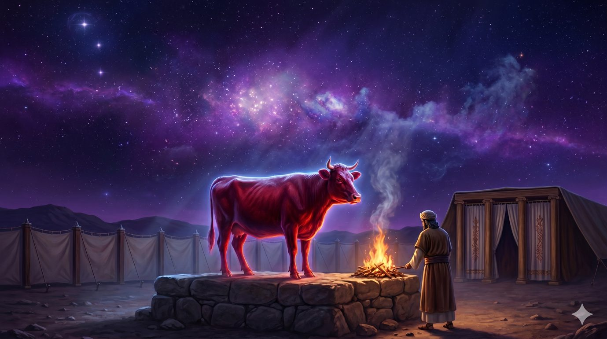
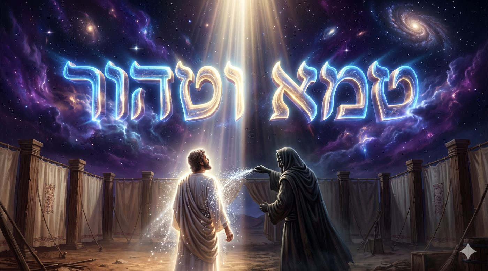
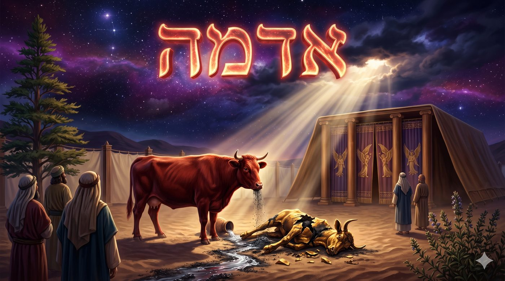
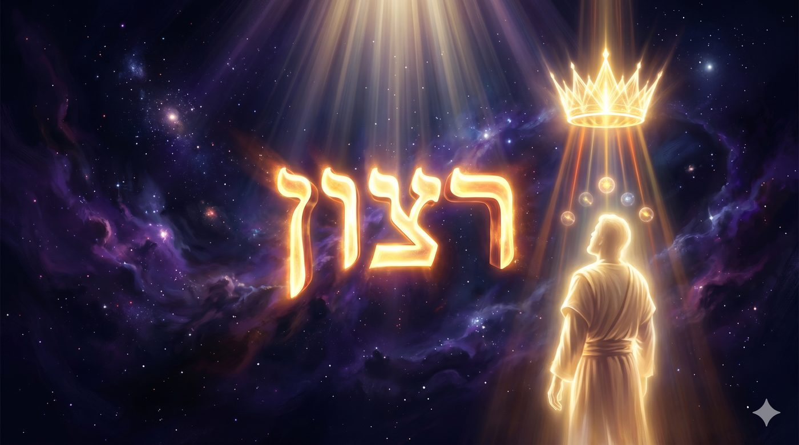
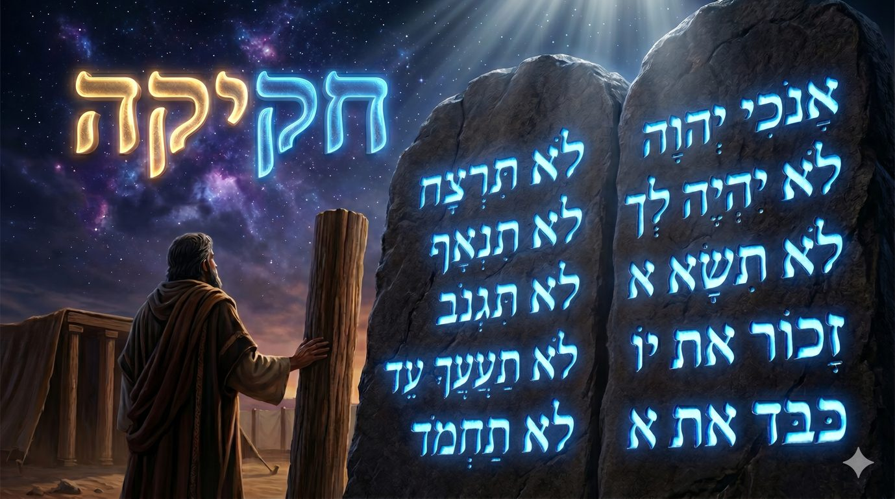
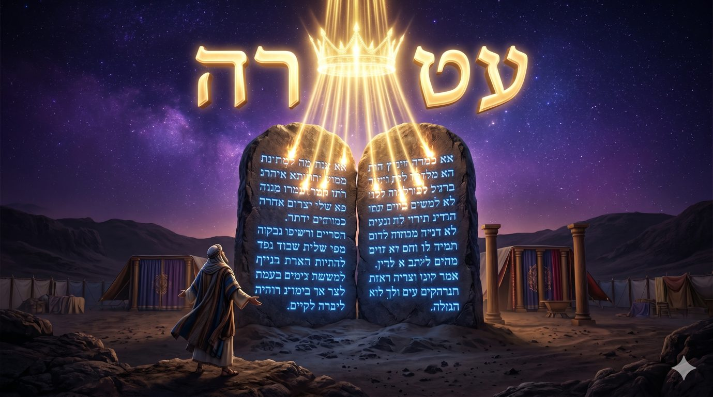

Le décret avant la compréhension
H'oukat, la Para Adouma et le secret du commandement sans raison, ou pourquoi le plus pur des liens commence là où s'arrête l'intelligence
La paracha s'ouvre sur la loi la plus déroutante de toute la Torah, celle de la vache rousse. D.ieu ordonne à Moché et Aharon de prendre une génisse entièrement rousse, sans défaut, qui n'a jamais porté le joug, de l'égorger hors du camp, de la brûler tout entière avec du bois de cèdre, de l'hysope et un fil de laine écarlate, puis de recueillir ses cendres. Ces cendres, mêlées à de l'eau vive, deviennent l'unique remède contre l'impureté la plus grave, celle que l'on contracte au contact d'un mort. On asperge l'homme souillé le troisième et le septième jour, et il redevient pur.

Mais le paradoxe éclate aussitôt. Cette eau qui purifie celui qui était impur, rend impur celui qui la prépare, de sorte que le Cohen qui asperge le souillé pour le rendre pur se souille lui-même en le faisant. La même cendre purifie, l’impure et impurifie le pur ? Et la Torah ne donne aucune raison, elle dit seulement, zot 'houkat haTorah, « voici le décret de la Torah ».
Mais ce décret irrationnel, sans raison apparente, posé en tête de la paracha, nomme en réalité un mode entier de la relation entre l'homme et le Ciel que nous allons essayer de comprendre.
Avec l’aide du Ciel et de nos maitres, nous verrons que la vache rousse n'est pas une loi obscure parmi d'autres, mais le sommet d'un type de commandement que la Torah appelle 'hok, la loi qui ne se justifie pas et que l'on accomplit sans la comprendre. Loin d'être une faiblesse de la raison, ce silence est sa plus haute parole, car la 'houka prend racine au-dessus de l'intelligence, dans la volonté pure d'En-Haut, là où le lien à D.ieu ne dépend plus d'aucun bénéfice ni d'aucune preuve. Et le mot חֲקִיקָה / gravure qui sommeille dans 'houka dira le dernier secret, le décret ne se pose pas sur l'âme comme une encre sur la page, il s'y grave comme une lettre dans la pierre, indélébile, faisant de l'homme et de la Torah une seule et même substance, devenant par la même sa couronne des temps futurs.
Avant le décret, l'histoire
La 'houka que Chlomo n'a pu percer, le paradoxe de la vache rousse
'Houka, michpat, édout, les trois visages de la loi
Le décret contre la mort, pourquoi une vache face au cadavre
L'Arizal et le birrour, les cendres du feu de Gevura
La racine du décret, la volonté au-dessus de la raison
Le décret qui grave, 'houka et 'hakika
Notre 'houka intérieure, le lien qui précède la preuve
Quand le décret livrera sa raison
Il faut mesurer d'abord l'ampleur du mystère, car les maîtres l'ont placé plus haut que toute autre énigme de la Torah. Le Midrach rapporte que Chlomo HaMéleh', le plus sage des hommes, celui à qui D.ieu avait donné une sagesse plus vaste que le sable de la mer, avait percé le sens de presque tous les commandements, mais qu'il s'est arrêté devant la vache rousse. Il dit, en commentant le verset de Kohélet, amarti e'h'kama vehi re'hoka mimeni, « j'ai dit je serai sage, mais elle reste loin de moi ». Tout, j'ai compris, dit Chlomo, mais ce chapitre de la para adouma, il m'échappe.
Le paradoxe qui l'a vaincu tient en une phrase. La cendre de la vache metaher temeïm oumtamé tehorim, elle purifie les impurs et rend impurs les purs. Celui qui est souillé par un mort, on l'asperge, et il devient pur. Mais celui qui prépare cette eau, celui qui brûle la vache, celui qui recueille la cendre, celui qui asperge, tous ceux-là deviennent impurs par le contact même de ce qui purifie. Une seule et même matière agit dans deux sens opposés selon celui qu'elle touche, et aucune logique de la nature ne peut tenir ensemble ces deux effets contraires. L'eau qui éteint ne peut allumer, le remède qui guérit ne peut empoisonner, et pourtant la cendre fait les deux.
C'est ici que Rabbi Yo'hanan ben Zakaï prononce la phrase décisive. Un non-Juif vint le trouver et lui dit, “ces rites que vous accomplissez ressemblent à de la sorcellerie, vous prenez une vache, vous la brûlez, vous broyez sa cendre, et quand l'un d'entre vous est souillé par un mort vous l'aspergez de deux ou trois gouttes en disant qu'il est pur”. Rabbi Yo'hanan lui répondit par une parabole qui apaisa le païen, mais lorsque l'homme fut parti, ses élèves lui dirent, maître, celui-là tu l'as repoussé avec un roseau, mais à nous que réponds-tu ? Et il leur dit ces mots que toute la tradition a retenu, « par votre vie, ce n'est pas le mort qui rend impur, ce n'est pas l'eau qui purifie, c'est un décret du Roi, gezera hi milefanaï, et vous n'avez pas le droit de transgresser mon décret ».
Voilà le seuil. Le plus sage des hommes s'arrête, et le plus grand des sages ne donne aucune raison, il donne un nom, gezera, décret. La para adouma n'est pas une loi qu'on n'a pas encore comprise, elle est une loi faite pour ne pas être comprise, et c'est cela même qui la rend si haute. La vache rousse ne cache pas une raison que nous ignorons, elle révèle un mode du lien où la raison, justement, n'a pas à parler.

Pour saisir la portée de ce mot, il faut le replacer parmi ses voisins, car la Torah ne donne pas un seul nom à ses commandements, elle en donne trois, et chacun désigne un rapport différent entre l'homme et l'ordre divin. Rachi, suivant le Midrach, les distingue avec une netteté qui éclaire tout.
Il y a d'abord les michpatim, les lois de justice, celles que la raison humaine aurait dictées d'elle-même si la Torah ne les avait pas écrites. Ne pas voler, ne pas assassiner, ne pas tromper, rendre à chacun son dû, ces commandements, l'esprit les reconnaît comme nécessaires, et l'on pourrait presque dire qu'ils étaient déjà inscrits dans la conscience avant d'être gravés sur les Tables. Il y a ensuite les édout, les témoignages, ces commandements qui rappellent un événement, le Chabbat qui témoigne de la Création, les matsot qui témoignent de la sortie d'Égypte, les tefilines qui témoignent de la délivrance. La raison ne les aurait pas inventés, mais une fois posés elle en comprend le sens, car ils portent une mémoire et instruisent un cœur.
Et il y a enfin les 'houkim, les décrets, ces lois dont Rachi dit qu'elles sont « une ordonnance de Ma part, tu n'as pas le droit de t'interroger sur elles », ces commandements que le mauvais penchant et les nations du monde réfutent en demandant ma hamitsva hazot ouma hataam bah, « quelle est cette règle et quelle en est la raison ». L'interdit du chaatnez, le mélange de la laine et du lin, le bouc envoyé à Azaz-el le jour de Kippour, les interdits alimentaires, et au sommet de tous, la para adouma. Ces lois n'ont pas de raison qui s'offre à l'esprit, et leur accomplissement repose sur un seul fondement, la volonté de Celui qui les a ordonnées.
Mais il faut aller plus loin, car le verset de notre paracha ne dit pas « voici le décret de la vache », il dit zot 'houkat haTorah, « voici le décret de la Torah » tout entière. Les maîtres l'ont remarqué, la vache rousse n'est pas un 'hok parmi d'autres, elle est le 'hok de la Torah elle-même, le point où toute la Torah se révèle comme décret. Car même les michpatim que la raison approuve, nous ne les accomplissons pas parce que la raison les approuve, mais parce que D.ieu les a commandés, et la para adouma vient nous le rappeler en plein cœur des lois.
Le décret n'est pas le contraire de la loi raisonnable, il en est la racine cachée, car toute mitsva, même la plus logique, n'oblige qu'en tant que volonté divine.
Si la para adouma défie la raison, c’est qu’elle vient affronter ce qui défie la raison plus que tout au monde, la mort. L'impureté que la vache rousse efface n'est pas une impureté ordinaire, c'est la toumat met, l'impureté du contact avec un cadavre, que la tradition nomme avi avot hatouma, le père des pères de l'impureté, la source la plus haute et la plus contagieuse de toutes les souillures. Et il faut se demander pourquoi la mort, précisément, exige un remède qui échappe à la raison.
La réponse remonte au commencement. La mort n'était pas dans le plan premier de la Création, elle est entrée dans le monde par la faute d'Adam et du serpent. Le serpent a séduit 'Hava, l'homme a mangé, et avec la faute est venue la sentence, ki afar ata veel afar tachouv, « car tu es poussière et tu retourneras à la poussière ». La mort est donc une brèche, un désordre introduit dans une création qui était faite pour la vie, et le poison du serpent, disent les maîtres, est cette force d'anéantissement qui n'aurait jamais dû être. La toumat met n'est pas un fait neutre de la nature, elle est la trace de cette brèche, le résidu de la morsure originelle.
Or une plaie irrationnelle ne se soigne pas par un remède rationnel. Le mal qui est entré dans le monde par une faille au-dessus de toute logique, une faille qui contredit le dessein même de la vie, ne peut être réparé que par une force venue d'aussi haut, et même de plus haut encore. Voilà pourquoi le remède de la mort devait être une 'houka, une loi sans raison, car seule une lumière située au-dessus de la raison peut atteindre un mal situé au-dessous d'elle. La vache est rousse, adouma, et le rouge est la couleur du sang, du din, de la rigueur, la couleur d'Edom et d'Essav, la teinte de la force qui sépare et qui tranche, c'est-à-dire la couleur même de ce qui a engendré la mort. Pour réparer le rouge de la faute, il faut le rouge de la vache, une rigueur retournée en remède.
Les maîtres ajoutent un secret qui referme le cercle. La para adouma, disent-ils, vient réparer la faute du Veau d'or, et le Midrach le dit par une image, « que la mère vienne nettoyer la souillure de son enfant », que la vache vienne effacer la faute du veau. Le peuple avait pris l'or (la matière de la rigueur) pour en faire un veau et s'était donné la mort spirituelle en l’adorant, et c'est une vache, la mère du veau, qui vient laver cette tache. Le bois de cèdre, qui s'élève haut, l'hysope, qui rampe au sol, et le fil écarlate jeté au feu enseignent que la faute vient de l'orgueil et que la réparation passe par l'abaissement, car celui qui s'est élevé comme le cèdre devra se faire humble comme l'hysope.
La mort est entrée par une brèche au-dessus de la raison, et seul un décret au-dessus de la raison pouvait la refermer.

Le Arizal, Rabbi Its'hak Luria, a consacré dans le Chaar HaMitsvot une analyse précise et profonde de la para adouma, au travers de son enseignement le paradoxe commence à se dissoudre.
Le Maitre commence par situer la vache rousse dans le système des attributs divins. La couleur rousse, adouma, qui définit l'animal, est la couleur de la Gevoura, la force de rigueur et de retenue qui gouverne le côté gauche de l'arbre des attributs. Mais la Gevoura dont il s'agit ici n'est pas une Gevoura ordinaire, celle que nous connaissons dans les mitsvot de séparation et d'interdit. C'est la Gevoura de l'Atsilout, le monde de l'émanation directe, la Gevoura à sa source, avant qu'elle ne descende et ne se durcisse dans les mondes inférieurs. Brûler la vache rousse, c'est donc faire descendre le feu de la Gevoura d'Atsilout jusqu'en bas, pour consumer ce que nulle autre force ne peut atteindre.
Les trois matières jetées dans le feu avec la vache portent chacune un nom dans l'arbre des de la vie, et le Arizal les identifie avec soin. Le bois de cèdre, ets erez, qui s'élève droit et haut, représente la Netsah', la victoire et la persistance, le côté de l'excellence qui peut glisser vers l'orgueil. L'hysope, ezov, qui rampe au sol et que le Psaume associe à la purification de la faute, représente le Hod, la splendeur humble, l’attribut de la reconnaissance de sa petitesse. Et le fil écarlate, tola'at chani, rouge vif, représente le Yessod, le canal d'union entre le haut et le bas, l’attribut par qui les forces contradictoires communiquent et se fécondent. Ces trois attributs forment le bas de l'arbre, et leur brûlure simultanée dans le même feu signifie que la réparation touche toute la colonne du monde créé, depuis la bonté jusqu'à l'humilité, reliées par le canal du Yessod.
Ce qui reste du feu, ce sont les cendres, et le Arizal voit dans la cendre le résidu du birrour, le tri des étincelles saintes. Toute chose dans le monde d'après la brisure des vases, le Chvirat HaKelim, contient en elle des étincelles de sainteté tombées dans les enveloppes des kelipot, les écorces du négatif. Quand on brûle la vache avec le cèdre, l'hysope et le fil rouge, le feu de la Gevoura divine sépare les étincelles de leurs enveloppes : les étincelles montent, libérées, et ce qui reste au sol est la cendre, un résidu purifié de toute kelipa. Mêlée à de l'eau vive, cette cendre devient le vecteur de purification, car elle porte en elle la trace du feu qui a fait le tri cosmique.
Et c'est ici que le paradoxe éclate dans toute sa logique cachée. Pourquoi le Cohen qui asperge se souille-t-il ? Parce que le processus de birrour, qui sépare le saint du non-saint, est nécessairement bilatéral. En libérant les étincelles saintes vers le haut, on libère aussi les kelipot vers le bas, et celui qui se tient au centre de cette opération reçoit les deux effluents : la lumière monte vers l'aspergé, et l'ombre redescend sur celui qui asperge. Le Arizal enseigne que la kelipa se nourrit toujours du résidu de la réparation, comme une ombre se nourrit de la lumière qui la génère. Ce n'est pas une anomalie, c'est une loi structurelle du monde du birrour : tout acte de séparation du saint produit un résidu qui revient à l'autre côté, et celui qui effectue cette séparation en est le premier touché.
Voilà le secret que Chlomo a vu de loin et qui l'a vaincu. Le paradoxe de la cendre n'est pas une contradiction logique, c'est la vérité même de la réparation dans un monde encore non unifié.
Le feu de la vache rousse est le feu du birrour cosmique, et le paradoxe de purifier en souillant est la loi profonde de tout monde où le saint et le non-saint ne sont pas encore définitivement séparés.
Il faut maintenant nommer d'où vient cette force, et ici la 'hassidout et la mystique parlent d'une seule voix. Toute mitsva, enseignent-elles, a deux dimensions, son corps et son âme, le geste qui s'accomplit ici-bas et la lumière qui descend d'en haut. Mais ces lumières n'ont pas toutes la même origine. Les commandements que la raison comprend tirent leur lumière de l'ordre déployé des mondes, le seder hichtalchelout, la chaîne descendante des lumières où chaque degré découle du précédent selon une mesure et une logique. La sagesse divine, la 'hokhma, s'y déploie en raisons, et l'esprit de l'homme peut en suivre le fil.
Les 'houkim, eux, ne viennent pas de là. Leur racine est plus haute que la 'hokhma, plus haute que toute la chaîne des mondes, dans ce que les maîtres appellent le ratson elyon, la volonté suprême, ou le Keter, la couronne, ce niveau qui n'est pas une pensée mais une volonté, et qui se tient au-dessus de toute pensée. Une couronne ne se porte pas dans la tête, elle se pose au-dessus de la tête, et de même le Keter désigne ce qui surplombe l'intelligence sans jamais y entrer. La 'houka descend de ce sommet, et c'est pourquoi elle n'a pas de raison, non qu'elle en manque, mais parce que sa source est au-dessus du lieu où naissent les raisons.
De là une conséquence renversante que le Sfat Emet souligne. Le commandement qui n'a pas de raison est, en vérité, plus haut que celui qui en a une, car ce dernier ne descend que jusqu'au niveau de la sagesse, tandis que le décret descend tout droit de la volonté pure. Quand l'homme accomplit un michpat qu'il comprend, une part de lui obéit à sa propre raison autant qu'à D.ieu, et son service est mêlé. Mais quand il accomplit une 'houka qu'il ne comprend pas, rien en lui ne le pousse sinon la fidélité au Roi, et son service est pur de tout intérêt et de toute compréhension. Le décret est le lieu où l'homme touche D.ieu non par ce qu'il en saisit, mais par ce qu'il Lui voue.
C'est ici que se renverse l'objection de l'incroyant. Le païen voyait dans la vache rousse une faiblesse, une loi sans fondement, presque une superstition. La 'hassidout y voit l'inverse, le sommet de la Torah, le seul endroit où le lien à D.ieu se montre dans sa clarté, dégagé de tout calcul. La vache rousse n'est pas le maillon faible de la chaîne, elle en est la couronne. Le décret ne descend pas de la sagesse de D.ieu, il descend de Sa volonté, et c'est pour cela qu'il s'adresse non à notre esprit mais à notre fidélité.

Reste à comprendre comment cette volonté d'en haut se loge dans l'homme, et le mot lui-même porte le secret. Le mot 'houka vient de la racine 'hakak, qui ne veut pas dire écrire mais graver. L'Admour Hazaken, dans le Likoutei Torah sur notre paracha, fait reposer tout son enseignement sur la différence entre deux manières de poser des lettres, l'écriture, ketiva, et la gravure, 'hakika.
Les lettres écrites à l'encre sur un parchemin sont une chose, la gravure en est une autre. L'encre se pose sur le parchemin, s'y ajoute, et l'on pourrait en théorie l'effacer pour retrouver la page nue, car la lettre et son support demeurent deux substances distinctes posées l'une sur l'autre. Les lettres gravées dans la pierre sont tout autre chose. Elles ne s'ajoutent pas à la pierre, elles sont la pierre elle-même creusée en forme de lettre, et l'on ne peut séparer la lettre de son support sans détruire la pierre, car ils ne font qu'un. Effacer une lettre gravée, c'est briser le bloc.
Telle est la différence entre une mitsva avec une raison et un 'hok. Le commandement qu'on accomplit parce qu'on le comprend ressemble à l'écriture, la lumière divine s'y pose comme une encre sur l'âme, vraie et précieuse, mais distincte de l'âme qui la reçoit, car entre les deux subsiste l'intervalle de la raison qui évalue et qui approuve. La 'houka qu'on accomplit sans la comprendre ressemble à la gravure, elle ne se pose pas sur l'âme, elle s'y creuse, elle devient l'âme même, parce que rien ne s'interpose entre l'homme et le commandement, ni raison, ni intérêt, ni compréhension. Là où l'écriture relie, la gravure unifie.
Ce n'est pas un hasard si les Dix Paroles furent 'haroutot al halou'hot, gravées dans les Tables et non écrites, car le don de la Torah au Sinaï fut une 'hakika, une gravure de l'alliance dans l'être même d'Israël. Et nos maîtres ont lu, ne lis pas 'harout, gravé, mais 'hérout, liberté, car celui dans le cœur de qui la Torah est gravée n'est plus l'esclave d'aucune raison ni d'aucun penchant, il est libre de l'attache la plus profonde, celle qui ne dépend de rien.

Le décret ne s'écrit pas sur nous, il se grave en nous, et ce qui est gravé ne s'efface jamais, car la lettre et la pierre ne font plus qu'un.
Cette histoire n'est pas seulement celle d'une vache et de ses cendres, car la 'houka habite chacune de nos vies, et elle y tient une place plus grande qu'on ne croit. Toute relation véritable repose, à sa racine, sur une 'houka, sur un lien qui précède la preuve et qui ne se justifie pas. L'enfant n'aime pas son père parce qu'il a pesé ses mérites, l'époux ne se lie pas à l'épouse au terme d'un calcul de raisons, et l'amitié qui n'existerait qu'aussi longtemps que dureraient ses bénéfices ne serait pas une amitié mais un commerce. Les liens qui tiennent sont ceux qui se sont gravés, non ceux qui se sont écrits, ceux qui demeurent quand les raisons s'effacent.
Et c'est aussi pour cela que la raison seule ne suffit jamais à porter les épreuves d’une vie. Celui qui ne ferait que ce qu'il comprend resterait prisonnier des limites de son propre esprit, et le jour où sa compréhension vacillerait, son engagement vacillerait avec elle. La 'houka enseigne le contraire, qu'il existe un point interne plus profond que compréhension, et que l'homme tient debout non par ce qu'il saisit mais par ce à quoi il se voue. C'est l'ordre que le peuple a proclamé au Sinaï, naassé venichma, « nous ferons et nous entendrons », car l’action précède l'ecoute / la compréhension, l'engagement précède la preuve, et c'est précisément cette antériorité qui rend le lien indestructible.
Il y a une grandeur paradoxale à obéir avant de comprendre. Les modernes de tout temps tiennent cela pour une servitude, et rangent l'obéissance sans raison parmi les humiliations de l'esprit, voir de l’obscurantisme. La Torah y voit la plus haute des libertés, car celui qui n'agit que sur preuve reste suspendu à la solidité de ses preuves, alors que celui qui s'est gravé un engagement plus profond que toute raison est libre de la fragilité des raisons. La 'houka n'éteint pas l'intelligence, elle la situe, elle lui apprend qu'elle est précieuse mais qu'elle n'est pas le fondement, et que sous la lumière qui éclaire se tient une volonté qui porte.
Voilà le travail intérieur que la paracha nous demande. Non pas renoncer à comprendre, car D.ieu veut aussi notre intelligence, mais reconnaître qu'au-dessous de tout ce que nous comprenons se tient un lien que nous n'avons pas à comprendre pour qu'il soit vrai.
Le plus profond de notre fidélité ne repose pas sur ce que nous avons compris, mais sur ce que nous avons gravé, et c'est ce socle muet qui tient quand tout le reste tremble.
Il reste à dire que le silence de la 'houka n'est pas éternel, et c'est la plus belle promesse de la paracha. Car si la para adouma échappe à Chlomo et à tous les sages, le Midrach enseigne pourtant que sa raison existe et qu'elle sera un jour révélée. D.ieu dit à Moché, et à lui seul, oule'ha ani megalé taam para, « à toi Je dévoile la raison de la vache », laissant entendre que cette raison cachée n'est pas une absence de sens mais un sens trop haut pour le temps présent, réservé, gardé, en attente de son heure.
Et cette heure a un nom, c'est le monde à venir. Les maîtres enseignent que dans le temps de la délivrance, les raisons de la Torah, les taamei, seront dévoilées, et qu'une Torah nouvelle, non pas une autre Torah mais le visage caché de la même, sortira d'En-Haut. Ce que nous accomplissons aujourd'hui comme décret, sans en voir le motif, nous le verrons alors illuminé de sa raison, et le 'hok deviendra michpat sous nos yeux. La 'houka n'est donc pas la part obscure de la Torah, elle en est la part encore voilée, le matin d'une compréhension qui ne s'est pas encore levée.
Mais il y a plus beau encore, et c'est le sens caché dans la gravure. Si la 'houka se grave et ne s'écrit pas, alors le jour où sa raison sera révélée, le lien gravé ne sera pas défait par la raison venue, il sera couronné par elle. Car l'homme qui aura accompli le décret par pure fidélité, sans rien attendre ni comprendre, aura tissé avec D.ieu un lien que nulle compréhension ultérieure ne pourra dépasser, et quand la lumière de la raison se posera enfin sur ce lien, elle ne le remplacera pas, elle l'embrasera. Celui qui a aimé avant de comprendre comprendra un jour ce qu'il a aimé, et son amour en sera couronné, non fondé.

Trois attitudes se tiennent donc devant nous. Il y a celui qui refuse le décret parce qu'il n'en voit pas la raison, et celui-là, comme le paien qui raille Rabbi Yo'hanan, passe à côté du plus pur du lien. Il y a celui qui obéit en attendant impatiemment la raison, et son service est vrai mais encore mêlé. Et il y a celui qui se grave le décret dans le cœur, qui accomplit la vache rousse comme on aime, sans pourquoi, et qui sait que la raison viendra non pour fonder son lien mais pour le couronner.
À nous de faire de chaque 'houka une gravure et non une attente, d'obéir avant de comprendre et d'aimer avant de savoir, jusqu'au matin où le décret livrera sa raison et où nous comprendrons, enfin, ce que depuis toujours nous avions choisi.
| בְּטַח אֶל ה' בְּכָל לִבֶּךָ וְאֶל בִּינָתְךָ אַל תִּשָּׁעֵן | Fais confiance à l'Éternel de tout ton cœur et ne t'appuie pas sur ta propre intelligence. |
|---|
(Mishlei 3:5)
Chabbat Chalom !
Par B.A., à Saint-Mandé, 6 Tamouz 5786 / 21 juin 2026
Yehi Ratson, puisse être la volonté du Ciel
Qu'il nous soit donné d'accueillir le décret non pas comme un poids que la raison subit, mais comme le lieu le plus haut où notre fidélité touche le Ciel, et que là où l'intelligence s'arrête, notre attachement ne faiblisse pas mais s'approfondisse.
Que nous puissions mériter le matin où les raisons cachées se lèveront, où le décret deviendra lumière, et où nous comprendrons enfin ce que, nous avions depuis toujours accompli.
Sources
| Torah | Talmud |
|---|---|
Bamidbar 19:1-22, la para adouma ; 19:2 "zot houkat haTorah" ; 20:1-13 Mei Meriva |
Yoma 14a, celui qui purifie se souille ; Nidda 9a, l'eau de la vache |
Vayikra 18:4, michpatim et 'houkim ; Berechit 3:19 "afar ata" |
Avoda Zara 35a, le décret sans raison à scruter |
| Mystique | Hassidout |
| Arizal, Chaar HaMitsvot H'oukat, para adouma Gevura et birrour des étincelles | Likoutei Torah ('Houkat), 'hakika et ketiva, le décret qui grave |
| Arizal, Ets H'aim, Atika Kadisha et Arih' Anpin, Keter du Keter | Sefat Emet 'Houkat, le 'hok plus haut que le michpat |
Midrach Midrach Tan'houma 'Houkat, "que la mère nettoie" ; Bamidbar Rabba 19, "oule'ha ani megalé taam para" |
Eroubin 54a, 'harout / 'hérout |